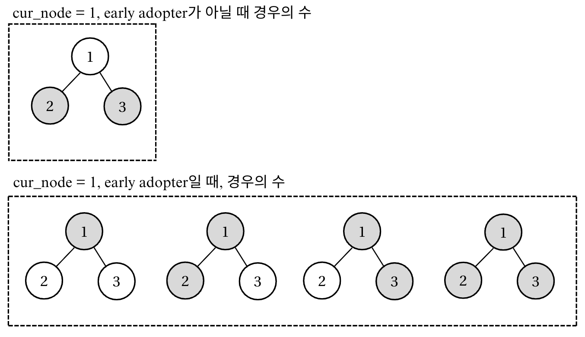

Lecture 4-2. DP 실습#
들어가기전, DP 문제를 풀 때 아래 정보들에 유념해서 문제를 푼다면 훨씬 도움이 될 것이다.
Things to think for a DP problem
# 6개 checklist
# 1) State: dp[...]
# 2) What to store: min/max/count/bool/value (필요시 prev/choice)
# 3) Base case init
# 4) Fill order: 작은 상태 → 큰 상태 (Top-down/Bottom-up)
# 5) Transition
# 6) Read answer
def solve(...):
# 예: 2D (i, j)
dp = [[INF]* (n+1) for _ in range(m+1)]
# base cases
dp[0][0] = 0
for i in range(0, m+1):
for j in range(0, n+1):
if i>0:
dp[i][j] = min(dp[i][j], f(dp[i-1][j], ...))
if j>0:
dp[i][j] = min(dp[i][j], g(dp[i][j-1], ...))
return dp[m][n]
DP 고득점 Kit
Tree DP
코테 기출
TreeDP#
서브트리의 정점 개수 세기#
Tree DP에서 Bottom-up 방식으로 구현하는 이유
Tree DP는 보통 Bottom-up(post-order DFS)으로 구현한다.
→ 자식들의 값을 모두 구한 뒤 부모 값을 계산하는 구조이기 때문.경우에 따라 부모 정보를 자식에게 넘겨야 하는 문제는 Top-down(pre-order DFS)을 병행하기도 한다.
따라서 Tree DP에서는 보통
dfs(curr, parent)형태로 구현해,
parent-child 관계를 유지하며 DP 값을 계산한다.또한 기본적으로 “parent”와 “children”정보는 그래프를 받을 때 저장을 해놓야하는 정보이다.
기본 post-order dfs는 다음과 같다.
# u: 현재 노드, p: parent node
def dfs(u, p):
dp[u] = 1 # 자신도 자신을 루트로 하는 서브트리에 포함되므로 0이 아닌 1에서 시작한다.
for v in graph[u]:
# tree에서 현재 노드와 연결되어 있는 노드 중 p (부모)빼고는 모두 children이다.
if v == p:
continue
dfs(v, u) # 자식 처리
dp[u] += dp[v] # 자식 값 합치기
아래의 그림처럼, acyclic graph를 트리로 변환하는 함수를 구현할 수 있다.

‘’’ 예시) 9 5 8 1 3 4 3 5 4 5 6 6 7 2 3 9 6 6 8
‘’’ n, r, e = map(int, input().split())
graph = [[] for _ in range(n+1)] children_list = [[] for _ in range(n+1)] parent_list = [0] * (n+1) visited = [False] * (n+1) for _ in range(e): a, b= map(int, input().split()) graph[a].append(b) graph[b].append(a)
parent node가 r인경우 tree로 만들기, top-down (pre-order dfs)
def makeTree(cur_node, parent): visited[cur_node] = True
for node in graph[cur_node]:
if node != parent and not visited[node]:
makeTree(node, cur_node)
children_list[cur_node].append(node)
parent_list[node] = cur_node
root에서 시작
makeTree(r, 0)
print(f”parent list: {parent_list}”) print(f”children list: {children_list}”)
makeTree and count_subtree
# f = open('Input.txt', 'r')
n, r, q = map(int, input().split())
graph = [[] for _ in range(n+1)]
children_list = [[] for _ in range(n+1)]
parent_list = [0] * (n+1)
visited = [False] * (n+1)
dp = [0] * (n+1)
for _ in range(n-1):
# print(_)
a, b= map(int, input().split())
graph[a].append(b)
graph[b].append(a)
# parent node가 r인경우 tree로 만들기, top-down (pre-order dfs)
def makeTree(cur_node, parent):
visited[cur_node] = True
for node in graph[cur_node]:
if node != parent and not visited[node]:
makeTree(node, cur_node)
children_list[cur_node].append(node)
parent_list[node] = cur_node
# root에서 시작
makeTree(r, 0)
# print(f"parent list: {parent_list}")
# print(f"children list: {children_list}")
def count_subtree(cur_node, parent):
dp[cur_node] = 1
for node in children_list[cur_node]:
count_subtree(node, cur_node)
dp[cur_node] += dp[node]
count_subtree(r, 0)
for _ in range(q):
root = int(input())
print(dp[root])
solution
문제는 위에처럼 maketree와 count_subtree를 따로 만들면, 두번의 dfs를 거쳐야해서 타임 아웃이 된다. 이미 데이터를 받을 때, graph정보안에 하나의 parent빼고 모두 children을 담고 있으므로 이를 이용하여, maketree함수를 따로 만드는 대신, count_tree함수만 사용할 수 있다.
import sys
sys.setrecursionlimit(1_000_000)
input = sys.stdin.readline
n, r, q = map(int, input().split())
g = [[] for _ in range(n + 1)]
for _ in range(n - 1):
a, b = map(int, input().split())
g[a].append(b)
g[b].append(a)
dp = [0] * (n + 1)
parent = [0] * (n + 1)
def dfs(u, p):
parent[u] = p
size = 1
for v in g[u]:
if v == p:
continue
size += dfs(v, u)
dp[u] = size
return size
dfs(r, 0)
out = []
for _ in range(q):
u = int(input())
out.append(str(dp[u]))
print("\n".join(out))
우수 마을#
Top-down Solution
이것을 DP로 구현하기 위해서 두 가지 경우를 생각하면 됩니다. 자신이 우수 마을인 경우와, 자신이 일반 마을인 경우 입니다. 첫 번째로 자신이 우수 마을이라면 자신의 자식 마을은 무조건 일반 마을이어야 합니다. 우수 마을끼리는 인접할 수 없기 때문에 자식 마을이 우수 마을일 수는 없습니다. 반대로 자신이 일반 마을이라면 자식 마을이 꼭 우수 마을일 필요는 없습니다. 부모 마을이 우수 마을이면 되기 때문 입니다.

위 그림에서 회색 우수 마을, 파란색은 흰색을 마을이라 생각해 보겠습니다. 1번이 우수 마을이라면 자신의 자식 마을인 2번은 반드시 일반 마을이어야 합니다. 반대로 2번이 일반 마을인 경우에는 자식 마을 3번, 6번이 우수 마을일 필요는 없습니다. 이와 같은 규칙으로 우리는 인구수가 최대한 많은 경우만 따져주면 됩니다.
즉, 아래의 규칙을 따르는 프로그램을 구현하면 된다.
현재 노드가 우수마을이면 자식 마을은 반드시 일반 마을
현재 노드가 일반 마을이라면, 자식 마을은 일반 마을/우수 마을 둘 다 가능
state: dp[node] = the node id
what to store: (현재 노드가 우수 마을인 경우 ‘subtree’의 전체 인구수 , 현재 노드가 일반 마을인 경우 ‘subtree’의 전체 인구수)
init: (num people of the node, 0)
recurrence relation: dp[parent][0] += dp[child][1] dp[parent][1] += max(dp[child][0], dp[child][1])
from collections import deque
'''
1-indexed (1~N)나라
- N-1개 길 (edge): tree
- 방향성 없음
우수마을 선정
- 우수 마을로 선정된 마을 주민 수의 총 합을 최대로 함
- 우수 마을끼리는 서로 인접하지 않음
- 우수 마을로 선정되지 못한 마을은 적어도 '하나의' 우수 마을과는 인접해 있다.
constraints
1 <= N <= 1e4
마을주민수 <= 1e4
- 마을끼리 그룹을 이루어서 떨어져있다면?
-> 불가능. 문제에서 마을과 마을사이를 직접 잇는 N-1개의 길이 있다고 하였음. 즉, 이 문제는 트리 문제이고, 떨어져있는 마을들이 없다고 가정함.
-> cycle도 없음. N개의 마을을 N-1개의 선으로 이을때 cycle을 만들 수 없음.
문제를 읽어보면, 작은 subtree를 먼저 계산해야 최종적으로 큰 트리에서 최대 합을 구할 수 있으므로, DFS (top-down)방식을 이용해 문제를 푼다.
'''
import sys
# sys.stdin = open('Input.txt')
sys.setrecursionlimit(int(1e4)) # 마을의 개수가 최대 1e4개 이므로 재귀를 N까지 올려줌.
N = int(input())
populations = [0]
populations.extend(list(map(int, input().split())))
visited = [False] * (N+1)
graph = [[] for _ in range(N+1)]
for _ in range(N-1):
u, v = map(int, input().split())
graph[u].append(v)
graph[v].append(u)
# status: each node
# (현재 노드가 우수노드, 현재 노드가 우수노드아님.)
dp = [[populations[_], 0] for _ in range(N+1)]
def dfs(node):
global dp
visited[node] = True
for child in graph[node]:
if visited[child]:
continue
dfs(child)
dp[node][0] += dp[child][1]
dp[node][1] += max(dp[child][0], dp[child][1])
dfs(1) # 아무 노드나 root로 선정
print(max(dp[1][0], dp[1][1]))
사회망 서비스#
Idea

Top-down으로 풀 경우, 트리에 3개의 노드가 있는 경우 위의 그림처럼 경우의수를 구할 수 있다. 즉, 현재 노드가 early adopter여야만 하는 경우는 딱 한 가지 경우이다. 반면, 현재 노드가 early adopter인 경우에는 children노드가 어떤 상황인지 전혀 상관없고, 그저 최소한의 경우를 가지고 오면 된다.
그러나, 재귀함수를 이용해 답안을 적으면, 겨우 통과되는데, 파이썬으로는 재귀를 이용하여 문제를 풀면, 잘 메모리나 재귀횟수때문에 통과가 안되는 일이 많다. 따라서, 위의 DFS 방식을 BFS 방식으로 바꿔야한다.
<DFS를 BFS로 바꾸는 스텝>
먼저 BFS로 모든 트리를 탐색하며 부모와 자식 노드들을 stack에 넣어준다.
stack.pop()을 하면서 자연스럽게 말단 노드의 값부터 가져온다.DFS()의 로직을 그대로 따라한다.
DFS Solution
'''
사람-노드, 에지-친구
- SNS에 속한 사람은 얼리 어답터/얼리 어답터가 아니다.
- 가능한 한 최소의 수의 얼리 어답터를 확보하여 '모든 사람이' 이 아이디어를 받아들이게 하기 위한 "최소한의" 얼리 어답터의 수를 구하라.
- SNS가 트리임을 가정 (graph without a cycle)
constraints
- N: 정점의 수 2 <= N <= 1e6 , 1-indexed
- 엣지수: N-1
'''
import sys
sys.setrecursionlimit(1_000_001)
input = sys.stdin.readline
# sys.stdin = open('Input.txt')
N = int(input())
graph = [[] for _ in range(N+1)]
for _ in range(N-1):
s, d = map(int, input().split())
graph[s].append(d)
graph[d].append(s)
# dp[node][0] = 현재 node가 early adopter가 아닐때, 필요한 최소한의 얼리어답터 수
# dp[node][1] = 현재 node가 early adopter일 때, 필요한 최소한의 얼리어답터 수
dp = [[0, 1] for _ in range(N+1)]
visited= [False]*(N+1)
def dfs(node):
visited[node] = True
for child in graph[node]:
if visited[child]:
continue
dfs(child)
dp[node][0] += dp[child][1] # subtree의 root가 얼리어답터가 아닌 경우, child nodes들이 다 얼리어답터여야함.
dp[node][1] += min(dp[child]) # subtree의 root가 얼리어답터인 경우, 모든 경우의 수인 경우에서 가능하므로, 가장 작은 것을 더해주면 됨.
dfs(1)
print(min(dp[1]))
# print(dp)
DFS Solution
'''
사람-노드, 에지-친구
- SNS에 속한 사람은 얼리 어답터/얼리 어답터가 아니다.
- 가능한 한 최소의 수의 얼리 어답터를 확보하여 '모든 사람이' 이 아이디어를 받아들이게 하기 위한 "최소한의" 얼리 어답터의 수를 구하라.
- SNS가 트리임을 가정 (graph without a cycle)
constraints
- N: 정점의 수 2 <= N <= 1e6 , 1-indexed
- 엣지수: N-1
'''
import sys
sys.setrecursionlimit(1_000_001)
input = sys.stdin.readline
# sys.stdin = open('Input.txt')
N = int(input())
graph = [[] for _ in range(N+1)]
for _ in range(N-1):
s, d = map(int, input().split())
graph[s].append(d)
graph[d].append(s)
# dp[node][0] = 현재 node가 early adopter가 아닐때, 필요한 최소한의 얼리어답터 수
# dp[node][1] = 현재 node가 early adopter일 때, 필요한 최소한의 얼리어답터 수
dp = [[0, 1] for _ in range(N+1)]
visited= [False]*(N+1)
def dfs(node):
visited[node] = True
for child in graph[node]:
if visited[child]:
continue
dfs(child)
dp[node][0] += dp[child][1] # subtree의 root가 얼리어답터가 아닌 경우, child nodes들이 다 얼리어답터여야함.
dp[node][1] += min(dp[child]) # subtree의 root가 얼리어답터인 경우, 모든 경우의 수인 경우에서 가능하므로, 가장 작은 것을 더해주면 됨.
dfs(1)
print(min(dp[1]))
# print(dp)
BFS Solution
import sys
from collections import deque
N = int(input())
tree = [[] for _ in range(N+1)]
for _ in range(N-1):
u, v = map(int, input().split())
tree[u].append(v)
tree[v].append(u)
dp = [[0, 1] for _ in range(N+1)]
def solve():
visited = [False] * (N+1)
start = 1
que = deque([start])
stack = []
while que:
parent = que.popleft()
visited[parent] = True
for child in tree[parent]:
if not visited[child]:
que.append(child)
stack.append([parent, child])
while stack:
parent, child = stack.pop()
dp[parent][0] += dp[child][1]
dp[parent][1] += min(dp[child])
solve()
print(min(dp[1]))
Diameter of Binary Tree#
Solution
'''
The diameter
- is the length of the "longest path" between any two nodes in a tree
- the length of a path between two nodes is represented by the number of edges between them
- This path may or may not pass through the root
Idea
- 현재 노드의 height를 dp에 다 저장한다.
- 현재 노드에서 최대 diameterd의 후보는 현재 노드의 양쪽 children의 높이를 더한 것이 된다.
Constarints
- 1 <= the number of nodes <= 1e4
- -100 <= Node.val <= 100
-> 노드의 개수는 최대 1e4인데, node.val은 최대 201개이므로, 다른 위치에 있는 노드라도 중복된 값을 가질 수 있다.
-> 따라서, visited를 설정할 때, node.val은 unique하지 않으므로 object별로 방문해는지 확인해야한다.
Time Complexity:
- O(N): 모든 노드를 정확히 한 번 방문
Space Complexity:
- O(H): 재귀 호출 스택, H=트리 높이, 최악의 경우 O(N)
'''
from typing import Optional
from collections import deque
# dp = defaultdict(int) # INIT to 0, node height (the # of edges)
# Definition for a binary tree node.
class TreeNode:
def __init__(self, val=0, left=None, right=None):
self.val = val
self.left = left
self.right = right
def __repr__(self):
return f"Node({self.val})"
class Solution:
def diameterOfBinaryTree(self, root: Optional[TreeNode]) -> int:
subtree_size = dict()
max_diameter = 0
def calculate_subtree_size(node):
nonlocal subtree_size, max_diameter
if not node:
return 0
# 이거 없어도 DFS는 맨 아래서부터 위로 올라감.
# if node in subtree_size:
# return subtree_size[node]
left = calculate_subtree_size(node.left)
right = calculate_subtree_size(node.right)
subtree_size[node] = max(left, right) + 1
# node를 가운데로 했을 때의 지름 후보 left + right
max_diameter = max(max_diameter, left+right)
return subtree_size[node]
calculate_subtree_size(root)
# print(subtree_size)
return max_diameter
def build_tree(arr):
idx = 0
root = TreeNode(arr[idx])
idx += 1
q = deque()
q.append(root)
while q and idx < len(arr):
node = q.popleft()
if idx < len(arr) and arr[idx] != None:
node.left = TreeNode(arr[idx])
q.append(node.left)
idx += 1
if idx < len(arr) and arr[idx] != None:
node.right = TreeNode(arr[idx])
q.append(node.right)
idx += 1
return root
def tree_to_arr(root:TreeNode):
if not root:
return []
result = []
q = deque()
q.append(root)
while q:
node = q.popleft()
if node:
result.append(node)
else:
result.append(None)
continue
q.append(node.left)
q.append(node.right)
while result and result[-1] == None:
result.pop()
return result
# tree = [1,None, 2,None, None, 3,4]
# tree = [1, 2, 3, 4, 5] # 3
# tree = [1, 2] # 1
tree = [1, 2, 3, None, None, 4, 5, 6, None, None, 7, 8, None, None, 9] # 6
root = build_tree(tree)
# print(tree_to_arr(root))
sol = Solution()
print(sol.diameterOfBinaryTree(root))
Binary Tree Max Path Sum#
코테 기출#
색깔 트리#
3번: String Compression II#
Problems
String Compression with Removal
Strings with long blocks of repeating characters take up much less space if stored in a compressed representation. To obtain the compressed representation, we replace each segment of equal characters in the string with the number of characters in the segment followed by the character.
For example,
- "CCCC" -> "4C"
- A single character is left unchanged (e.g. "B" -> "B")
- "BC" -> "BC" (since there are no repeats)
<Example>
- The compressed representation of "ABBCCDDCCC" is "A3B2C2D3C".
- The compressed representation of "AAAAAAAAAABXXAAAAAAAAAA" is "11AB2X10A".
<Observation>
In the second example above, if we removed the "BXX" segment from the middle of the word before compression, we would obtain a much shorter compressed representation "21A".
To take advantage of this, we modify our compression algorithm:
- Before compressing, we remove **exactly K consecutive letters** from the input string.
- Then we compress the remaining stirng.
We want to know the shortest compressed length possible after this operation.
<Task>
Write a function `def solution(S, K):` that, given:
- a string S of length N,
- and an integer K,
return **the shortest possible length of the compressed representation of S** after removing exactly K consecutive characters.
<Examples>
1. S = "ABBCCDDCCC", K = 3
- Remove "DDC" → string becomes "ABBCCCC".
- Compressed form = "A3B4C", length = 5.
- Function should return 5.
2. S = "AAAAAAAAAABXXAAAAAAAAAA", K = 3
- Remove "BXX" → string becomes "AAAAAAAAAAAAAAAAAAAAAA".
- Compressed form = "21A", length = 3.
- Function should return 3.
3. S = "ABCDDDDEFG", K = 2
- Remove "EF" → string becomes "ABCDDDDG".
- Compressed form = "ABC3DG", length = 6.
- Function should return 6.
<Constraints>
- N is an integer within the range [1 .. 100,000]
- K is an integer within the range [0 .. 100,000]
- K <= N
- S consists only of uppercase English letters (A-Z)